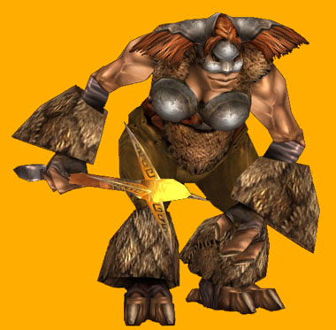
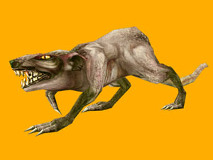

Назад
Содержание
Вперед
Pastor
И мне живется несладко,
Мне трудно нести свою ношу…"
Найк Борзов, "Лошадка"

Лошадка-а-а!
Эти записки были найдены случайно в период раскопок древней стоянки людей. Ученые бились над останками неизвестных животных, а нам, филологам попались записки неизвестного автора, которые мы после долгих трудов наконец-то расшифровали…
1 день 1 неделя.
Сегодня впервые увидел своего хозяина. Только к вечеру понял, что это хозяйка.
Рыжая. с двумя "конскими хвостами", короткой косой и стайкой крыс, бегущих за ней.
Поначалу, когда на меня, такого покатого, красивого и не прирученного надевали упряжь, заартачился. Тут же получил по голове оружием хозяйки. Хорошо тупой частью. Подумал и в ответ боднул её. И тогда мы поняли, что созданы друг для друга. Я представился мысленно как Вархук, она, как Соти. Решил отложить выяснение обстоятельств путешествия дня на два. Заночевали ночью за замком, пройдясь в темноте по лагерю каких-то существ.
2 день 1 неделя.
Поняли, что существа эти были гномами и везли они в наш замок припасы. Хозяйка мрачно поковырялась в остатках кибитки и взглянула на меня. Тихонько потупился и отступил, дотоптав остатки замерзшего пламени и пару бочонков эля. Получил ещё удар и понял, что заслужил…
4 день 1 неделя.
Впервые спросил, куда мы идем, и что там есть. На что услышал мрачное ворчание, сводившееся к обвинению какого-то "чертового Мелькора" в мужском шовинизме и домогательствах на рабочем месте. Видно результатом стал наш поход на столицу Виталов. Надо будет при случае спросить у знакомых, кто такой Мелькор. Пока идем по родным местам, которые узнаются родным запахом гари и тонким, чуть слышным, налетом сероводорода.
6 день 1 неделя.
Пока идем на север. Спросил, кто такие виталы. Получил ответ дословно: "Виталы, как эльфы - сволочи, скандалисты, склочники и головорезы. При этом - слабаки, только и знают из кустов стрелами кидаться, да тварей разных лесных натравлять". Спросил, какого черта идем на север, туда, где холодно, если по идее виталы должны жить в тепле. А значит - на юге. Это вызвало привал на полдня и гениальное решение Соти идти на юг, подкрепленное авторитетом хозяйки, её мускулами и парочкой жирных крыс, подброшенных мне на обед. Решил почаще давать советы.
2 день 2 недели.
Сегодня встретили первого витала. Я случайно затоптал десяток крыс, что вызвало бешеную реакцию Соти и обещанием оставить меня без завтрака. На что указал на строение, находящиеся в миле от нас. Оттуда слышался визг, как будто толпа разных животных занималась там одновременно… завтраком. Причем на всех явно не хватало. Вместе поняли, что это портал зверей ,и направились к нему, попутно выяснив, что у нас нет ни одного ресурса. Хозяйка стала прицениваться ко мне, но решила, видно обождать пока доедем до строения. В этот момент к порталу на зеленом таракане подъехал тонкий высокий, одетый в зеленое трико лорд. Путем логических умозаключений и сравнив с ориентировкой на врага, выданной перед выездом из замка, поняли, что это витал.
Соти завопила: "Ууу!" И пришпорив меня, помчалась вперед на врага. Я тоже, со скоростью где-то мили две в час. Витал обрадовался, и таракан, перебирая лапами, молниеносно помчался на нас. А я иду. Он ещё быстрее. А я иду. Ну он и врезался в меня… Вы когда-нибудь видели, как летают драконы в брачный период? Да… ну вот он летел так же быстро, только не так эстетично.
В результате витал со всеми припасами оказался на земле. После чего начал грязно ругаться, обзывая Соти "Чертовой феминисткой", "Рыжей стервой" и "ненавистной хаоткой". На что хозяйка улыбнулась (бр-р-р, я не из пугливых, но меня проняло) и, взглянув на остатки своего крысиного воинства. протянула "Де-е-етки, за-а-автрак". После чего повернулась к пленному и спросила:
- Или, может, скажешь, где ваша столица?
- С-с-скажу!!! Всё скажу, только прекратите щекотать крысами меня!!! Ха-ха-ха!!!
- Ребята, назад. Итак?
- На юг… ха… по этой дороге… ой…, там будет гора большая, от неё на восток, а там ха-ха… - увидите. Убери их…
- Вот видишь. Кстати, домой хочешь?
- Хочу, - угрюмо ответил, витал.
- Ну, тогда поцелуй меня и свободен.
- Лучше плен! - произнес тот и вздрогнул.
- Ну и валяйся тут, - обиделась Соти, а я в отместку за хозяйка пожевал местами трико лорда виталов, в результате чего он приобрел вид первого эльфа посреди пустыни в шортах и топике.
Хозяйка подобрала мешок с припасами и направилась к зверинцу. Там, недолго думая, набрала всех тварей по максимуму. В результате всех крыс пришлось выкинуть, но одну я спрятал под панцирем, и она осталась с нами. Её Ари звали. Теперь за нами идет большая толпа всякого разномастного сброда, который надо чем-то кормить. Плюс маленькая тележка со спящим циклопом. Продавец сказал, что когда он проснется, то всем будет зер капутт. Решил подождать до этого момента и переключился на еду. Понял, что надо что-то придумывать, а то орки и остальные меня съедят…
3 день 2 неделя.
Придумал. Сделал их вегетарианцами, т.е. перевел на подножный корм. За нами теперь остается пустая земля и обглоданные деревья. Соти задумчиво изобразила мысленную активность и изобрела тактику "выжженной земли". Получил пару кусков вяленого авиакского мяса за совет. Хорошо…
7 день 3 неделя.
Она меня глубоко обидела. Не, ну не виноват я!
Сначала она, после встречи с этим эльфом сильно грустила, а потом поплакалась мне в панцирь, после разгрома секретного витальского завода по изготовлению секретного оружия с жестокой формулой С2Н5ОН. Ну, вроде, хозяйку никто не любит, Мелькор, гад, теперь из-за него она всех мужчин ненавидит, её никто не любит, а она хороша-а-а-ая! Изобразил понимание и сказал, что от её мускулов и лица все должны падать на колени. Не поняла меня и ударила косой. Хорошо голову спрятал… Зато сбрила две сенсорные антенны и достоинство нашей расы - рог. Обиделся и загнал её на ближайшую скалу. Сам сел внизу.
1 день 4 неделя.
Сидим. Она пыталась командовать войском, но оно побрело в поисках пищи. Циклоп в тележке, правда остался. Спит ещё. Делаем вид, что ни она, ни я друг с другом не связаны.
2 день 4 неделя.
Пыталась послать меня в одиночку на штурм столицы виталов. Сказал, что не слышу, и попросил спуститься и сказать погромче. Соти проорала, что не будет разъяснять тупым бронтозаврам, что им надо делать, и если я не понимаю, то она мне разъяснит, где Кинеты зимуют. Ответил, что всю жизнь мечтал это узнать, а потому подожду ещё.
3 день. 4 неделя.
Пришел Сиврид с толпой кобольдов и спросил, что мы тут делаем? Ответили, что высматриваем сверху столицу виталов, потом помирились и пошли собирать войско. После того, как всех собрали, попинали тех, кто уже не мог встать, подтащили спящего циклопа к костру, и отпраздновали примирение, Сиврид сказал, что он идет туда же, а потому можно будет пойти вместе. Переглянулись с хозяйкой и решили завтра пойти вместе.
4 день 4 неделя.
Сиврид с утра ходил подавленный и с синяком под глазом. Пристал к его двуногу Кузьме и спросил, чего случилось. Тот ухмыльнулся и показал на пунцовую от гнева и радости Соти. После чего мы понимающе переглянулись и отправились в последний переход к вражьему замку.
6 день 4 неделя.
Встретили основное войско виталов. Главный вражий герой, сумрачно одетый в темно-зеленые цвета, ждал на подходе к замку, нагло улыбаясь. После совещания решили применить синтетскую тактику и потравили всё поле витальским же оружием с того завода. Результат был противоположный, ожидаемому. Теперь улыбалось всё вражье войско и шатающейся толпой шло на нас. В страхе оба наших войска сделали шаг назад, и тут… кто-то толкнул тележку с циклопом. Она покатилась в сторону виталов, от такого обращения одноглазый проснулся и встал во весь рост.
Я не из слабонервных. Но такое не забывается. Циклоп выхватывал из воздуха камни и одновременно жонглировал шестью-семью, попутно посылая камни во врага, постепенно укладывая их всех в глубокий обморок. Лорд виталов сначала остолбенел, потом побагровел, потом позеленел, полностью слившись с цветом своей одежды и, наконец, получив камнем в лоб, улегся рядом со своим войском. Циклоп же раскланялся и сказал:
- Благодарю, благодарю Вас. Жду всех в цирке хоббитов Бэггинсов каждую среду и субботу с шести часов вечера, - после чего опять отключился.
- Который сегодня день Вархук? - спросила Соти.
- Суббота. Шесть вечера.
- Понятно. Оружие с часовым механизмом. Напомни мне, чтобы на штурм Цитадели я пошла в среду или субботу. По обстоятельствам.
Я пообещал напомнить, и мы сели на военный совет. С одной стороны Кузьма и я, с другой - Соти и Сиврид. Решали, как будем штурмовать замок виталов. Не заметили, что все войска спят на отравленном поле сном праведников, хотя таких вроде среди них не было.
Достали остатки оружие виталов и в процессе его уничтожения нашли выход. Для его реализации связали всех врагов, лежавших в обмороке и легли спать.
7 день 4 неделя.
Проснулись под прекрасные звуки ругательств виталов и мягкие намеки насчет завтрака нашего войска, плотоядно поглядывавшего в сторону противника. Остудили пыл парой огненых валов и обещанием найти "много доброй еды" к полудню.
Узнав о том, что надо будет сделать для её завоевания, многие воины забились в истерике, но Кузьма выпустил удила и пару раз плюнул огненной стрелой в их сторону, и недовольные умолкли…
После чего виталы были раздеты, а мы…
Мы стали похожи на эльфов, страдающих врожденным кретинизмом, но обладающих большим энтузиазмом, а потому решивших показать командованию изображения потенциальных врагов, но в спешке забывших сменить одежду…
Оглядев войско Сиврид протянул: "Мда…"
Соти сказала: "Согласна", - она-то завернулась в плащ витала, и поехала дальше, а вот Сивриду пришлось переодеваться полностью. Нас с Кузьмой было не замаскировать, а потому на нас одели венки, сунули под панцирь по цветку, и вся наша компания гордо двинулась к замку виталов.
- спустя 3 часа -
- Пришли… - протянул Сиврид.
Замок возвышался неприступной горой. Зеленого цвета. Ворота были закрыты, но мы всё равно подъехали к ним. Я пару раз их боднул. Посыпалась каменная крошка, пара кирпичей отдавили ногу подвернувшемуся орку, но ворота устояли.
Со стен нас окликнули
- Эй, кто идет?
- Свои, - тихонько, как могла, ответила Соти, она не учла, что её "тихонько" громче всякого баса виталов.
- Кхм, - ответили со стен - свои в это время дома сидят, палантир смотрят. Чем докажете?
- А вот, зверюшками! - заворчал Сивурд , и вытолкнул вперед орка, в ушах и волосах которого торчали ветки деревьев - это - дендроид! А это - он указал на крысу, покрашенную в зеленый цвет - клещ! Боевой! Сам выращивал…
- Верю. А как зовут зверушек, на которых приехали?
- Молчите Кузьма, Вархук, - сказала Соти - это наши маленькие безобидные каракатицы. Только они большинство ног в битве с проклятыми хаотами потеряли…
- О! Так вы тоже были разбитой этой ничтожной феминисткой, поганой хаоткой Соти? Что же вы молчали! Входите!
Сивурд закрыл поцелуем рот Соти, заставляя её переключиться, от готового вырваться оскорбления в адрес виталов, на такое приятное занятие. Конечно, она его прервала, дала пощечину и пообещала припомнить ему после победы всё. Сивурд смиренно покивал. Мы с Кузькой покачали мордами.
В этот момент ворота открылись, и мы вступили внутрь…
- спустя ещё час -
- Ну ты молодец, Вархук! Наша цель выполнена, Мелькор только что удивился, что мы взяли без потерь столицу виталов, но подарил нам её навсегда… так что мы теперь свободные пти… щит, т.е. щет! Хаоты, а потому я тебя отпускаю!
Я не смог сдержат чувств, и разрыдался, попутно, завалив Соти на траву двора замка… Она пыталась меня спихнуть. В этот момент пришел Сивурд с букетом цветов в одной руке и топором в другой. Увидев сцену, он потупился и произнес:
- Я, эээ, не мешаю? В общем, моя цель выполнена, а потому я тоже ухожу. В общем Соти, это… тебе. И он протянул ей топор. Я восхищенно покачал мордой. Знал же, чем её можно пронять. Топор ручной, гномей работы, лезвие тонкое. Мелькорово-дюжинной закалки. Д-а-а-а.
Было видно, что хозяйке тоже понравилось, она им взмахнула пару раз и расцвела.
- Спасибо. Я…
На этом записи кончаются, и разобрать их нет никакой возможности. Соответственно возможна вольная трактовка их в любых произведениях, будь то книги, игры или кино, ибо автор утерян и его права недоказаны…

Назад
Содержание
Вперед